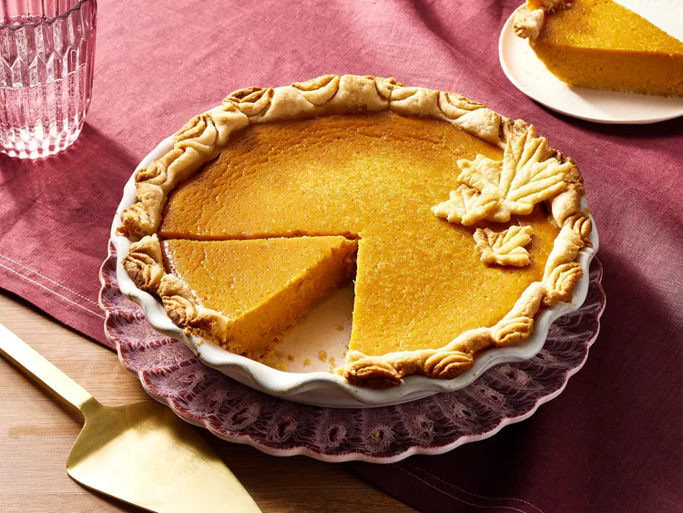

Homemade Fresh Pumpkin Pie

Description
This homemade pumpkin pie made with mashed, cooked pumpkin is my family's favorite. Skip the canned pumpkin and store-bought crust and make your holiday pumpkin pie from scratch with a flaky homemade pastry crust and a deliciously spiced pumpkin filling. Hope you enjoy it as much as my family does!
Ingredients
- For the crust: all-purpose flour, salt, shortening, and cold water
- For the filling: cooked pumpkin, evaporated milk, eggs, brown sugar, cinnamon, ginger, nutmeg, salt
Steps
- Mix the flour and salt. Cut in the shortening, then add the water.
- Shape the dough into a ball. Roll it out on a lightly floured surface.
- Cut the rolled dough and fit it into the pie pan.
- Beat the filling ingredients together, then pour it into the prepared crust.
- Bake in a preheated oven until a knife comes out clean.